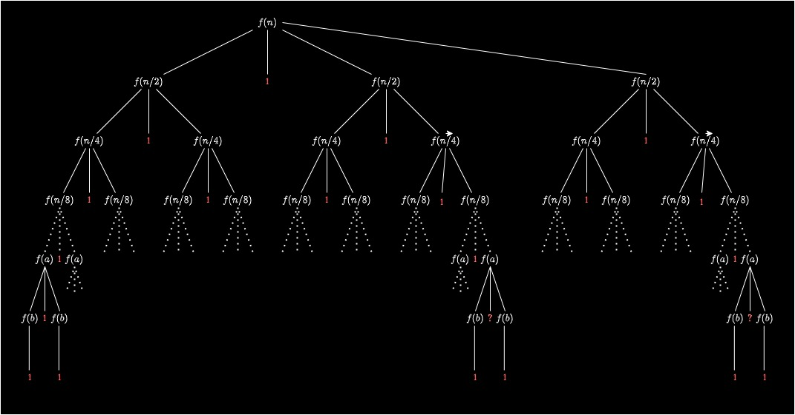

Pelo que apendemos em Desafios de Programação até o momento, qual a complexidade das operações aritméticas (soma, subtração, divisão e multiplicação)?
Gabarito
Se você pensou em O(1), você está correto. Mas será que não podemos levar em consideração o contexto?
Para o contexto do handout, consideraremos o número de dígitos. Dessa forma, a única operação aritmética O(1) é aquela entre dois números de um algarismo só. Todas as outras operações terão complexidade O(n²), sendo n o número de dígitos do maior algarismo.
Tendo isso em mente, vamos pensar em situações da computação em que usamos grandes multiplicações.
Pergunta
Onde usamos multiplicações de números inteiros de grande magnitude na programação?
Veja alguns exemplos.
Criptografia, processamento de sinais e processamento de grandes conjuntos de dados.
Conseguiria imaginar todos esses processos sendo executados em complexidade de tempo O(n²)?
Assim, vale pensar em alternativas para o algoritmo de multiplicação tradicional em números de muitos algarismos: uma dessas, o Algoritmo de Karatsuba.
O algoritmo
O Algoritmo de Karatsuba é uma técnica eficiente de multiplicação, encontra aplicação significativa na área de computação, especialmente em operações que envolvem números grandes.
A criptografia RSA, por exemplo, é um sistema amplamente utilizado para segurança de comunicações online e utiliza a multiplicação de números primos extremamente grandes. A aplicação do Algoritmo de Karatsuba, nesse caso, permite reduzir significativamente o número de operações de multiplicação, otimizando o desempenho do sistema.
Suponha que precisamos multiplicar dois números grandes, como 12345678901234567890 e 98765432109876543210. O Algoritmo de Karatsuba divide esses números em partes menores, realiza multiplicações recursivas e, na etapa de combinação, emprega estratégias inteligentes para reduzir a quantidade de operações.
Exemplo e dedução
Para facilitar o seu entendimento, ilustraremos um exemplo com números menores para entender o mecanismo de maneira mais simples. Suponha que desejamos multiplicar os números 1234 e 5678. O Algoritmo de Karatsuba divide cada número em duas partes aproximadamente iguais:
Número 1: 12 e 34
Número 2: 56 e 78
Atividade 1: Equilibrando os números
Quando dividimos o número ao meio, a parte mais significativa está “perdendo” suas casas decimais (a casa de milhar e das centenas), se fizermos a soma 12 + 34 não vamos chegar no número 1234 então é necessário que desloquemos os números mais significativos para suas devidas casas.
Faça isso para os números 1234 e 5678 que já foram separados
Gabarito
\(X = (12 * 10^{4/2}) + 34\)
\(Y = (56 * 10^{4/2} ) + 78\)
Assim, somando os números, voltaríamos a ter 1234 e 5678
Atividade 2: Dando nome aos números
Da separação anterior, temos que:
a = 12
b = 34
c = 56
d = 78
n = 4
n representa o número de dígitos do número
Como ficam X e Y quando substituímos seus números pelas respectivas letras?
Gabarito
\(X = (a * 10^{n/2}) + b\)
\(Y = (c * 10^{n/2}) + d\)
Atividade 3: Multiplicação dos dois números
Faça a multiplicação \(X * Y\), aplicando a distributiva
Se expardirmos o produto \((a+b)(c+d)\) da segunda equação, teremos a seguinte expressão:
\((a+b)(c+d) = ac + ad + bc + bd\)
De que forma podemos fazer com que a segunda equação se torne a primeira?
Gabarito
Subtraindo \(ac\) e \(bd\) da expressão:
\((a+b)(c+d) − ac − bd = ad + bc\)
Agora, substituindo isso de volta na fórmula I, obtemos a fórmula II. A ideia é evitar calcular \(ad\) e \(bc\) separadamente, pois isso requer duas multiplicações adicionais. Em vez disso, podemos calcular \((a+b) × (c+d) − ac − bd\) em uma única multiplicação e reduzir a complexidade computacional do algoritmo de Karatsuba.
Vamos calcular juntos a complexidade do Algoritmo de Karatsuba!
Como visto no tópico anterior, esse código realiza três chamadas recursivas, divisões, potências de 10 e combinações por soma e subtração.
Sendo assim, usaremos a receita para cálculo da complexidade de funções recursivas, vista na Aula 8:
Escreva a recorrência;
Construa a árvore;
Calcule um limitante para a altura;
calcule a “soma de vermelhos” (parte não-recursiva das expansões) de cada andar.
Exercício 1
Escreva a recorrência do Algoritmo de Karatsuba.
Dica 1: A recursão é chamada três vezes com n/2.
Dica 2: Podemos usar a multiplicação tradicional quando o maior algarismo tiver menos de 2 dígitos.
Dica 3: A soma tem complexidade O(n).
Gabarito
/
| 1 se n < 2;
f(n) = <
| 3f(n/2) + n se n >= 2.
\
Agora que temos a recorrência, podemos construir a árvore.
Exercício 2
Construa a árvore de complexidade do Algoritmo de Karatsuba.
Resposta
Feito isso, estimaremos a altura h da árvore.
Exercício 3
Calcule um limitante para a altura da árvore.
Gabarito
Tamanho n divide por 2 a cada andar enquanto for maior que 2.
No antepenúltimo andar (h-2), ainda não chegamos na base.
n / 2^(h-2) > 2
n > 2 * 2^(h-2)
n / 2 > 2^(h-2)
n / 2 > 2^h / 2^2
n / 2 > 2^h / 4
2^h < 2n
2^h = O(n), ou seja, 2^h <= c_x n
Com a altura podemos calcular a soma de todas as “folhas”, e assim chegar à complexidade do Algoritmo de Karatsuba.
Exercício 4
Some a parte não recursiva de cada andar.
Gabarito
Ao longo dos andares, temos
(n + n3/2 + n6/4 + ... + n(3/2)^(h-2)) + 3^(h-1)
Soma infinita
- primeiro elemento n
- razão 3/2
< n / (1 - 3/2) + 3^(h-1)
= n / (1/2) + 3^(h-1)
= 2n + 3^(h-1)
= 2n + 3^h / 3^1
= 2n + 3^h / 3
= 2n + (3^h)^(log2 3) / 2
Como 2^h <= c_x n
<= 2n + n^(log3 2) / 2
Como log2 3 > 1, a complexidade é O(n^(log2 3)).
Portanto, para números muito grandes, o algoritmo de Karatsuba é mais eficiente em termos de complexidade do que a multiplicação tradicional.